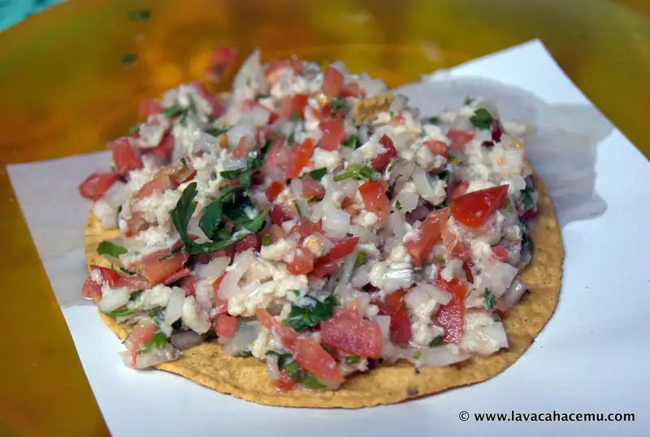
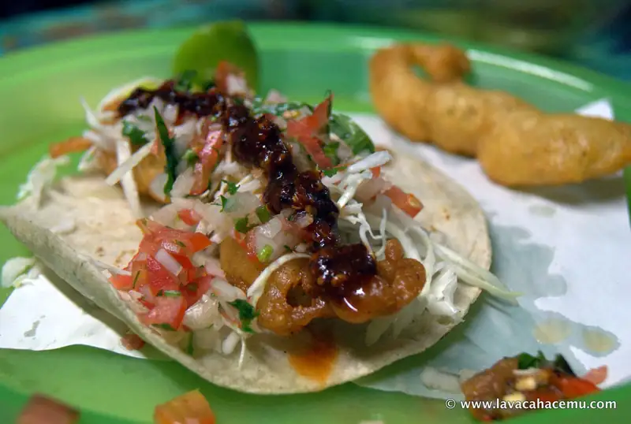

Yujajai Ensenada B. C. restaurantes revisitados

{kind=link}


{kind=link}
Nosotros los humanos somos, sin duda, criaturas de hábitos, unos buenos, unos malos pero... comer comida buena es... un mal hábito? naaaah este es uno de esos lugares habituales que tratamos de visitar cada vez que estamos en Ensenada. La última vez que fuimos pedimos platillos que sería mas típico encontrarlos en un restaurante, pero esta vez nos decidimos por algo más de sus orígenes de carreta: tostadas de ceviche y tacos de pescado y camarón. Y si, si podrías cruzar la calle y pedir un ceviche hecho de forma más artística (ya reportaré de ese lugar en otro post), pero si quieres ceviche tradicional, este lugar es difícil de superar. No, no tienen guisos raros como en la carretita que hizo famosa Anthony Bourdain, pero el ceviche.. mil veces mejor! Y los tacos? ohhh yeeeh.. crujientes por fuera, suavecitos por dentro y envueltos en una tortilla de maíz. como _Debe_ ser.. digo, si sabías que Ensenada es la cuna de los tacos de pescado, verdad?
En las fotos está: una tostada de ceviche de pescado, taco de pescado y taco de camarón; si, esa otra pieza de fritura al lado del de camarón es un camarón entero que ya no cupo en el taco!